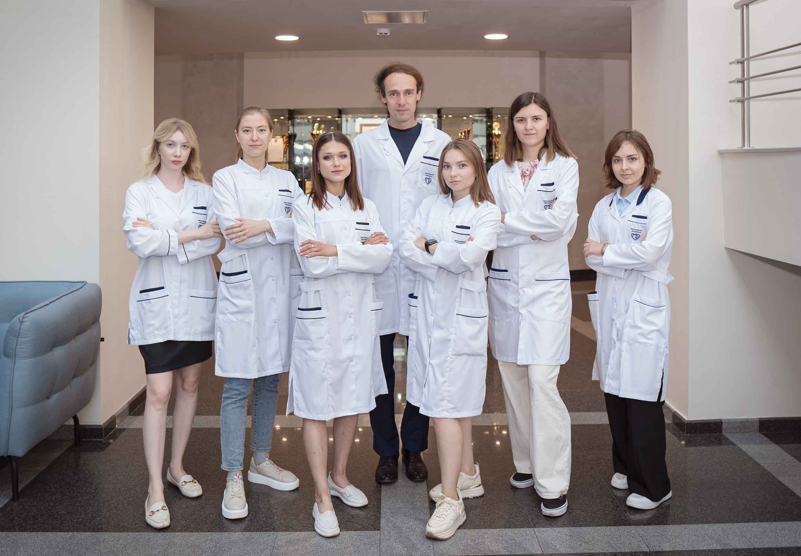

Moscow Ultrasound Lab
Medical Ultrasound Imaging Research Group @ Moscow Center for Diagnostics and Telemedicine
We develop end‑to‑end solutions for ultrasound imaging — from open‑source C++ frameworks (RUFUS)
and tissue‑mimicking phantoms to augmented reality navigation for ultrasound‑guided interventions.
Our goal is to make ultrasound research more reproducible, training more effective, and interventions more precise.
Research Projects
Open‑source C++ framework for ultrasound signal processing on real RF data.
Tissue‑mimicking models for ultrasound training and algorithm validation.
🥽 Augmented Reality
AR navigation for ultrasound‑guided interventions and medical education.
Principal Investigator
Dr. Denis Leonov
Leading Scientist and Scientific Supervisor of Moscow Ultrasound Lab
Ultrasound signal processing, phantom design, AR navigation
Research Scientists
Yulia Bulgakova
Junior Research Scientist / PhD Student
Ultrasound phantoms, tissue-mimicking materials, validation studies
Olga Vlasova
Junior Research Scientist
Ultrasound phantoms, training models, experimental studies
Veronika Grebennikova
Junior Research Scientist
3D-printed phantoms, ultrasound imaging, validation
📷
Marina Dubova
Junior Research Scientist (currently on parental leave)
Ultrasound phantoms, tissue-mimicking materials, validation studies
Technical Staff
Ekaterina Belyakova
Phantom fabrication, 3D printing, quality control
📷
Maria Tyrtyshnikova
Phantom assembly, material preparation, documentation
📷
Robert Zakharjan
3D printing, mold fabrication, equipment maintenance
📷
Arina Terzi
Augmented reality
Alexander Serov
Augmented reality
Analyst
📷
Anna Akopova
Data analysis, research coordination, reporting
Administration
Anastasia Voronina
Administrator (currently on parental leave)
Laboratory management, project coordination, documentation
Selected Publications
- Leonov D., Kulberg N., Yakovleva T. Aberration correction by polynomial approximation for synthetic aperture ultrasound imaging. Medical Physics, 2024. DOI
- Leonov D., Kodenko M, Leichenco D, Nasibullina A, Kulberg N. Design and validation of a phantom for transcranial ultrasonography. Int J CARS, 2022. DOI
- Leonov D., Venidiktova D., Costa-Júnior J.F.S., Nasibullina A., Tarasova O., Pashinceva K., Vatsheva N., Bulgakova J., Kulberg N., Borsukov A., Saika M.J. Development of an anatomical breast phantom.... Int J CARS, 2024. DOI
- Leonov D., Nasibullina A, Grebennikova V, Vlasova O, Bulgakova Yu, Belyakova E, Shestakova D, Costa-Junior JFS, Omelianskaya O., Vasiliev Yu. Design and evaluation of an anthropomorphic neck phantom.... Int J CARS, 2024. DOI
- Leonov D., Grebennikova V., Zhou Z., Costa-Júnior J.F.S., Shestakova D., Saikia M.J., Vetsheva N., Kulberg N., Pashinceva K., Omelianskaya O., Vasilev Y. Design and validation of a technology for 3D printing training phantoms for ultrasound imaging. Phys Eng Sci Med, 2026. DOI
Join Us
We are always looking for motivated students, postdocs, and engineers.
If you are interested in ultrasound imaging, signal processing, medical phantoms,
or augmented reality — please contact us at leonovd.v@ya.ru.

Moscow Ultrasound Lab team